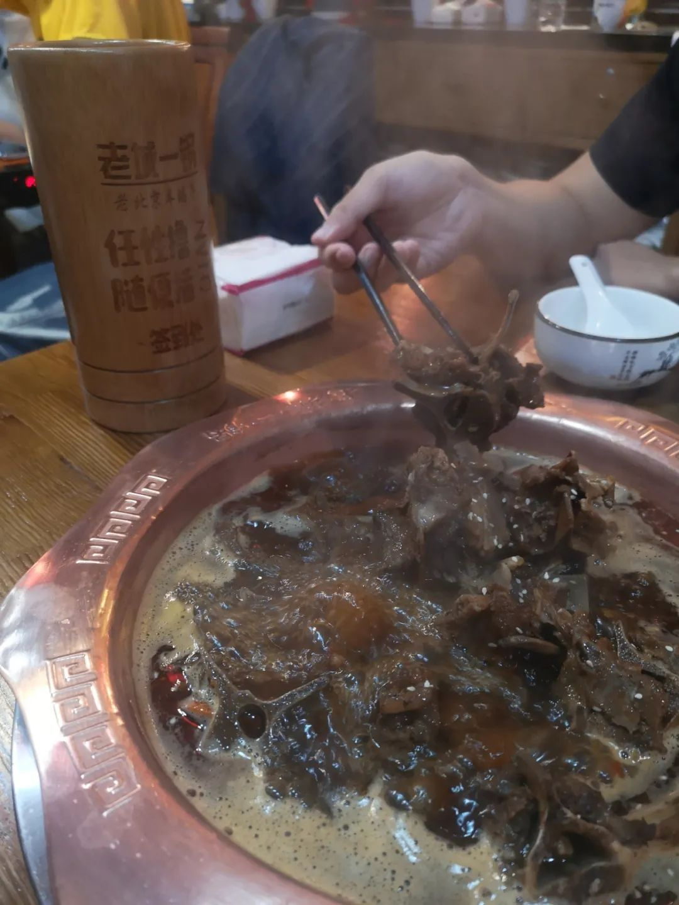
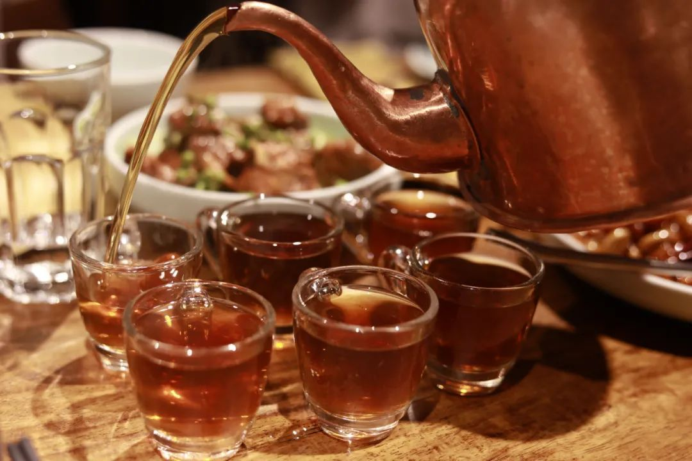
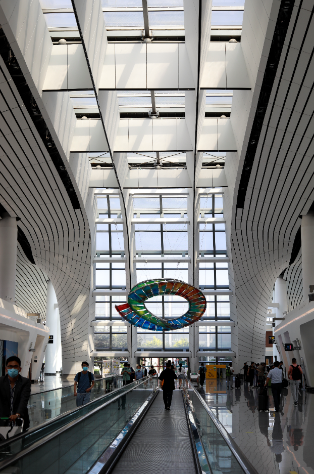

一年多了。上次写这个系列，还是一次湘南行记。时间在去年三月底。再次写下这个系列的标题时，觉得有些陌生。是这样吗、还是说 反正标点是故意这么打的。总的来说，这一次对北京的印象好了不少。比起两年前甚至不愿意用这个系列的名字而写下小张小张，卑微开张来看，至少这一次是回归了正常标题的 [正常这个词是这么用的吗]
我和广州就是有缘无分。第一次去广州还是读小学的时候，从长沙坐卧铺去。那时候一整节车厢，我指的是比单纯两边上中下还要大的单位，一整节车厢都是我们的人。但那一次也不是去广州，而是取道广州到香港。后来中学时代里，没有对广州的印象。那会儿约莫在重庆西藏青海新疆四川这些地方。到了本科时期。本科去了两次香港，三次深圳。都经过了京广线的这一段。我依然记得从湖南往南要经过韶关、英德、虎门这些神奇的地名。深圳北怎么看怎么熟悉。但是广州南呢，只有前年八月初我从香港回来，先买了一张西九龙到广州南的高铁票，停留了十几分钟换了另一趟广州南到长沙南的票。这一次在广州也是蜻蜓点水。和Ming从新加坡樟宜机场回国，准点率97%的航班在经过了我们之后调整到了93%也挺凑巧。在广州14个24小时，广州经历着过程而一步一步到了现在的模样。虽然人在广州，但是毕竟哪儿都没去（也不敢去）你说人在广州吧好像确实在，但是说到了哪儿呢感受了什么文化呢好像又说不上来。点了14天的外卖，后来我都点不动了。有一餐没一餐地吃。吃应该在饿的时候，不饿的时候就和醉后添杯效力等同。
回长沙过了14+7后，就迅速搭高铁去了北京。有好些我早已遗忘了的地名，华北大地，又再一次唤醒。除开省会之外，信阳、驻马店、漯河、新乡、安阳、邯郸、高邑、保定、定州、涿州。长沙到武汉的这一段就不消多说，随口都能说出来，再熟悉不过了。这一次稍微有进步，在于返程的时候到了一趟廊坊，后话。
到了北京就开始紧锣密鼓地学习。这趟学习也是我回国的由头。果然和师兄师姐们描述的一样，纯干货的密集型知识点轰炸。卢老师的体力是真的很猛。我不知道他这么讲能讲多久，反正我只能说佩服。早上九点到中午十二点、下午一点到六点半，卢老师就一直这么讲不停地讲，中间没有任何课间休息。这意味着，中午也只有一个小时让你边吃饭边休息，白天的其他八个半小时就是卢老师在不停地讲不停地讲，而且是有条理地密集输出各种有用的细节内容。这些细节，一天的量我保守跟朋友估计的是顶我在新加坡两周自己摸索计算化学才能摸索出来的样子，而且我自己摸的还不一定对。
这里边的门道就好比写字画画一样，你知道这里要逆锋起笔、回锋收笔，但写出来的字就是歪七扭八。卢老师的课就从头到尾梳理，这里可能踩坑的是什么，什么是有用的什么是没用的，为什么没用，全部密集地输出。第一天下午到北京西，进会场大概四点左右。及至下课就听到旁边人在嘟囔“不知道他这么说自己累不累，我反正是坐在这里光听都已经听累了。”这也是我之后每天的感受。其实可以这样想。本来是回国休年假，然后在年假的时候去参加一个培训会。所以如果把到北京当成旅行来看，那么就是在旅行的白天都还会去参加一个效率超频的学术会议。汀起来多么有作为一名博士生的自我修养（而且还是自费笑死整个事情都很ridiculous）第一天早上长沙吃了顿盛在斗笠碗里的干面，然后就往北京去[此处倒叙]


说实话我已经很久没有见过这么多人了，而且口罩也戴得稀稀拉拉的。怎么说就，很不适应吧。下午上课的最后一个小时，我在开心麻花定了一张票，是慕清欢推给我的北京文惠券。本来打算看孟京辉的《枪，谎言和玫瑰》但在我下午到北京的时候就已经没有票了。当时想，开心麻花也不错，至少是喜剧，很适合现在的我而且也是现在的我很需要的情绪代入。
虽然没有吃午餐，但也觉得并不饿。下课放了东西之后，带本书就去了地质礼堂的开心麻花剧场，在西城区灵境胡同北边，那条叫做羊肉胡同。从武汉封城前的最后一场舞台剧黎星《大饭店》到现在，已经很久了吧。又进剧场就像老朋友Reunion. 看完话剧后，带着瓶北冰洋在西城区溜达，刻意地避开了大路而选择了小胡同。走到了白塔寺，就是让我们荡起双桨里说的白塔。白塔寺东边胡同里，有一家很有情调。我不确定是店抑或是人家，不过这都不是重点。外墙上挂着好些个风铃。我走过白塔的时候，正好风起。墙上的风铃就随着风的节奏，垂下的重物领着音叉，和着风一起敲打墙面。我心下想：这算一次邂逅了。音乐会有音乐会的宏大，有方寸音乐厅内演奏的畅想。胡同里的乐音也有自己的特点，是你在感受到一阵风的时候，身旁的风铃也应和起了阵阵乐音——每一阵都不同、而每一阵又都和风相关。
不觉得把这样的风铃声录下来会是多么明智的选择，因为风铃本来就有清脆响声和好听的乐音。我即便能录下来一小阵乐音，但也录不下来现场的风和我靠在墙壁上就能顺着红墙看到一片低矮北京四合院旁高高矗立的白塔。不需要弄得多么深刻，不存在说我在白塔边听到了梵音大道，或者和音乐会的乐音有什么高下之分。就像不同的菜系里的不同烹调方法，白塔边与北京夜晚的仲夏晚风和音色各异的风铃，这种体验是不一样的生活沉浸，约同于有人在音乐厅的群里送了你一张柏林爱乐。也没有特定往哪走。逛累了之后我就骑上了车。北京的青桔没有之前骑长沙青桔电单车的开心，必须得开始骑才能上电。于是我当运动地从西二环内骑了十几公里到西三环外。趁着最后的电，在沙县点了一杯北冰洋和一碗炒饭。这是最近第一次做体力运动。本来打算骑到哪儿累了就打滴滴，但终于也没有需要。而且最重要的一点是，这会儿来北京也就几个小时，可以不用看地图就可以自己找回去。甚至这都不是我之前常去的海淀。我上课和住的地方都在西三环外的丰台七里庄。这次对北京的印象变好，可能是因为相比之下这座城市没有那么苛刻地计较我。之前的每天，各有各的难过。两粒酱说今晚在我脸上看到了久违的笑容。是啊，就是一些很喜欢的事情——穿梭在城市之间、学自己想学的东西、自由安排餐食、以及最重要的看话剧。被话剧和舞台剧代入，就是用演员们的专业能力把你代入他们营造的氛围中。当然也谢谢舞美灯光和配乐老师。今晚去看了开心麻花的『醉后赢家』是一部惊悚喜剧。我真的太久没有看话剧了。我也不是去挑刺的。我就是觉得，已经好久没有这样开心过了。羊肉胡同的开心麻花剧场。果然是大本营的力量。
下午六点半课程结束，七点十五和滴滴师傅踩点到剧院。看完之后出门，开心得想马上和人分享开心能量。买了瓶北冰洋冰镇得恰到好处。一边喝着一边在西城区当街溜子。随便往哪儿走走僻静地聊天。胡同又是胡同。想起来的时候就上了电单车。慢慢骑，和着风不着急，多往小道去。七十分钟骑行后，回到住处。人间好聪明。没吃午饭和晚饭，带了份沙县回。想做什么就去咯。手法可以艺术一点，不过喜欢就一定要去。希望这种积极的快乐因为科研学习、艺术欣赏和运动的快乐常有。
我是不习惯总给不在我专业或者方向内的人叙述我在做什么。因为总在单方面输出，没有必要而且也很累。就好比我已经讲到了氧气分子在捕获这部分能量后过渡到了单重态的reactive oxygen species，但是人家连氧分子的电子结构排布都不知道，也更谈不上知道氧分子在能量最低的排布状态是三重态。要是我讲的内容都得从原子轨道耦合形成分子轨道讲起，其实就挺没劲的。因为听的人从一开始就觉得这是一个新东西，那当然也不会之后我后边讲的东西意义在哪。最基础的就已经意义很超远了。这也是很多科研人的困境。你仰望星空看到的内容，最后别人只问你脚踩在哪了。问这个问题本身不可怕，可怕的是在这种问法底下的耐心丧失和圈定自我知识范围。后者我想必已经在早先的随笔中说过多次了：相比于学文的人而言，学理的人对对方学科往往排斥会小一些。亦即会去B站听罗翔的刑法课，但是很少会非需要的人去关心类似糖化学与生物代谢这类主题。我指的需要是有层次差别。生活中需要刑法吗，是需要了解，但是普通人常识下知道交通法规和不要杀人放火和自己的职务犯罪；糖化学和人不相关吗，看看你家的米缸，但也没有必须到要知道饭越咀嚼越甜。不光是讲课水平的问题。对受众的准入门槛和知识储备要求也是一个不小的事。让我去听超弦理论，或者理解杨振宁到底在物理学上处于怎么样伟大的定位，我也说不上来——据说要真的自己去手撕完那几个方程组才知道。我上边说量子化学与计算化学里，卢老师怎么体力好能讲这么久，只是一个直观化感性的表达，但是真实自己走过弯路看过培训的书，才知道有好多东西能卡你很久而且根本没法自己一个人在短暂的学习中就尝试完那么多弯路。晚上和好朋友Yingtao见面，去吃了一顿羊蝎子。以前我不知道什么叫羊蝎子，正巧这一天也没有吃午餐，于是听说有羊蝎子就马上赶往五道口的老城一锅。竹本是北京土著，给我列了长长的一个单子提说北京有哪些好吃的，羊蝎子就推的老城一锅。寻思着，实际上我并不知道什么是羊蝎子呀。是羊和蝎子吗？是蝎子爬进了羊肚子里吗？还是说这是一只能吃蝎子的羊？吃之前我都不知道是什么样子的。于是边吃边查，原来是鲁菜的名菜，内容是羊的脊椎骨。因为形似蝎子而得名。但是吃起来是真的不错。而且在国内吃饭，即使是在北京的连锁大店里，也比在坡非食阁的餐馆里便宜。
去了五道口，没道理不去理化所吧。事实上这个顺序是反过来的，我是先定的去理化所，然后看到时间已经太晚了于是在附近吃了晚餐再去，顺便买点水果。毕竟这里是我之前实习过的地方，也是开始写尬走篇之后，三年前的暑假描述北京的样子。三年前我还在听mla琢磨着今天点什么吉野家，三年后吃着当时觉得吃不起的内容，但是变得时不时忧心忡忡。于是重新回了老地方。老地方没怎么变，却也有些新的面孔出现。到休息室后，甚至还能想起我之前坐在哪。旁边位子上坐的是谁，噢，ta现在也已经去别的地方发展了。还是会想到在这边睡睡地板瑜伽垫，和一些朋友夜聊，以及一位师兄在窗边小声议论“怎么这一屋子做高分子材料的人，没人弄个疏水的放在空调上接着水不让滴下来呢，还用透明胶沾着。交流交流信息，有点像叙旧但也得到了些新感觉。毕竟已经不一样了，得用发展的眼光看。第三天依然选择了开心麻花。到北京三天，两天给了剧场。2021年中大戏《双城环梦记》，是happy ending的喜剧。虽然两天前看的惊悚喜剧是同一个创作班底，但是风格走回了像《乌龙山伯爵》这样很开心麻花的剧作。所以很开心。我很需要喜剧，尤其是现在这会儿的时候。之前和knight互相推剧，在湖北剧院看的第一场开心麻花，看惯了孟京辉的荒诞先锋在想我是谁我怎么在这喜剧真的是这样嘛。现在不会了。现在是我很需要结构精巧的高质量喜剧，话剧演员们会带来很聪明的力量。
和Yingtao从海淀剧场出来，走着走着发现满恒记已经关门了。那就去吃烧烤呗，康康北京的烧烤有没有什么区别。定位到人大旁边，自然要问问聪明的慕清欢。慕清欢和朋友一起来，感觉是原本已经在网上很了解的校友，这一回终于能面基。聚十三烤肉博物馆，相比之下我们的话题更有营养一些子。慕清欢从理工科转到文科类，很早的时候我就想当面问问其中的心路历程和个中感受了。
第四天下午还上着课，就开始抢号。谁让这是火烧云呢？久仰大名而素未谋面，毕竟是要去吃一吃的这个傣家菜。究竟有多神奇呢？五点钟开始放号也得等到八点半才进店，不愧是火烧云。吃是真的不错，有图为证：

和吃的一样棒的，是好久没见的高中同学。人在境外就愈发期待从他人身上找到一些共同点，这种想法在古代描述为思乡，现在应该说成是回到自己的舒适区。都是几个熟人喏，彼此已经多么熟悉了。怎么说有多熟悉呢？甚至可以说，一起的九个人里，除我之外的其他八个人，如果能每个人抄一段不长的话比如梦游天姥吟留别的开头几句，我仅凭字迹就能知道这是谁写的字。其他人或许也能做到，时隔很久去分辨熟悉的笔迹也并不是什么难事。可能这就是老朋友喏。后来收到yuanzi老师的点赞，我把高清的原图发过去。yuanzi老师说：太美好了！大家都好开心老同学见面感觉格外不一样吧，你看你笑得
虽然有朋友已经五年没有线下见过，但是见面也就好像只是去楼下买了杯西柚水。从高中时代离开之后，班级从集体成为团体。觉得就很有趣。我喜欢聚在一起既能在形而上随缘游泳，又能戚戚促促好远以前大家都还很受制约、而且娱乐方式不多的人生阶段。第四天晚上没有约其他人。想着自己出去走一走。特别想吃的是什么呢？是炸酱面和铜锅涮肉。炸酱面本来第一天就想吃，但是一直没有找到在哪里。记得Caesar在我说起的时候又推了一家给我。但是那会儿已经没有机会去了。绕回来，绕到第四天晚上自己出去吃独食。一人食火锅，不能算在孤独等级里。能享受的一人食火锅，可能是个人自我满足的高处。东来顺、满恒记、九门涮肉，都在竹本给我推的单子上。后来突然想起来《穆斯林的葬礼》虽然我说是过誉了，不过地名一直都在北京二环内流传着我指的是牛街。牛街住了很多回民。附近又是一篇石榴园。大概是牛和榴分不清吧，回民们做的牛羊肉都不错。于是这条街便称作了牛街。所以直冲牛街。我选择了牛街上的：聚宝源。聚宝源似乎更是一个本地小头牌（虽然北京的头牌实在是太多了hhhh随便一家大小店说不定都能跟你整出从咸丰说起的历史）总之我冲过去了。铜锅自然是铜锅。所以说和潮汕牛肉火锅、四川麻辣火锅对比起来，北京的铜锅涮肉算是比较不一样的。说实话看到铜锅的时候我有点想到前一天在火烧云吃的傣家菜，和云海肴的汽锅鸡不一样的锅装鸡肉土豆泥。之前吃过一次铜锅涮肉，在武汉的香港路附近。记得那一次是很冷的天气，一路从光谷凄风冷雨地开车到汉口，然后在武汉湿冷的天气里吃一份麻酱铜锅。说实话麻酱是不错的，当适应了这个味道之后。在聚宝源点的是双人餐。但是因为我也想吃另外的好评菜高钙羊肉，所以就又点了一份高钙羊肉。录了一段小视频，说怎么在铜锅里涮肉，引朋朋哥的评论：你这夹肉的步骤我看了好几遍，先煮一片，再夹一片生的，然后再把熟的吃了，生的锅里煮着等着熟。严谨，讲究，有节奏，一气呵成！
带着一本单读的书，内容是关于疫情一年的反思。里边引了不少人的文章，从笛福《瘟疫年纪事》的现代反思，到现在人的随笔。疫情和每一个人都息息相关，所以这时候的反思也就变得没有新意的话，我根本不会拿出来说。书中说在去年上半年时，人们纷纷支持各类管制政策、以及用接近群众暴力的方式予以表现；而到了下半年，人们在听到疫情的时候，纷纷不愿意再去触碰这些信息，看到了也觉得噢就那回事，然后揭过。这样的行为有着更深层次的含义，在于我们怎么样对待过去的历史、以及从中汲取教训。秦人不暇自哀，而后人哀之。后人哀之而不鉴之，亦使后人而复哀后人也。没有那么悲观地觉得，人们从历史中学到的唯一一件事：是人们不会从历史中学到任何教训。但是至少在一个个体，一个正在看书的人，也许会因此而有了和其他深刻的人对话的可能。当我带着一本单读在聚宝源吃饭，我是坐地铁去的。在地铁上就一直在看书。好像，带着书的一路上，就是和很多很多人在对话。吃铜锅涮肉也是一样。双人餐有两份麻酱，我的确只能吃完一份。吃剩下一份的时候，嘴里的渗透压已经不是开始时候的模样了。慢慢吃，吃到服务生在扫地谢客了，我也没有再继续看书和偷听旁边老北京们的聊天。以下的图，是从Singapura Plaza五月九号在南京大牌档吃青团以来，一个多月后第一次拿起相机。我也觉得很陌生。所以也没有修。
出国也这么久了。我想，回来了，那去一趟天安门吧。于是就去了天安门。坐车从牛街，经过菜市口和前门往广场去。一束灯光映照着苍劲有力的大字——毛泽东纪念堂。从天安门广场东，过长安街到天安门广场西。广场在装扮着。但是安防人员说，现在已经不可以进了，等凌晨三点半才会开——去看升旗的人们。 

于是我从天安门西又坐车到天安门东。又从天安门东坐车到天安门西。长安街是聪明而宽阔的，再过几天，这边就会有盛大的典礼。广场的西边，国家博物馆；广场的东边，人民大会堂。广场的灯照亮了国徽，天安门上的两行字：中华人民共和国万岁，世界人民大团结万岁！倒也没有想太多，到了近前更觉得宏伟和气派。
毕竟是天安门城楼。本科前两次到北京，我都没有说，特别地想要来看一次天安门，毕竟高一的时候到北京看过的天安门、也看过了博雅塔未名湖和清华的二校门。但是这一次不一样，这一次是在国外过了九个月十个月的，然后再回来。学校对我的吸引力没有那么大，看来看去也并没有怎样。但天安门城楼不同。
最后一天，是另一位好姐妹的生日。去年Liumua的生日选在费大厨，当时正逢姐妹回国。同样的剧情和加码的班底。这次选择的是——北京菜小吊梨汤：


太聪明了，吃完分给我的生日蛋糕后，看起来就像是一幅现代的抽象画两点十五离开北大西南门。打车到草桥。北京地铁以150 km/h的速度把我送到了大兴机场，这会儿还只有三点十分上了一班会飞过夕阳时间的航班，在读的书是理想国的印尼篇
没有到过大兴机场，就像要去一次天安门一样。的确比坐高铁回家要便宜，如果只看机票的话



以及，在下飞机的时候拍到了长沙好看的晚霞，虽然只有小小的一面，几分钟后就淡去了
本以为可以凭解除隔离证明出入，但是还是check了好久。毕竟我在北京都已经很畅通的情况下，在长沙还不许我坐我没有坐过的磁悬浮列车。结果是从长沙黄花机场回家的时间，比从北京大兴到长沙黄花机场的时间还久。
回来也少了点内容：行李箱的轮子、以及一根背包带上的带子。